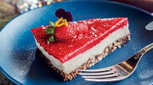
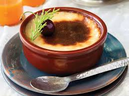
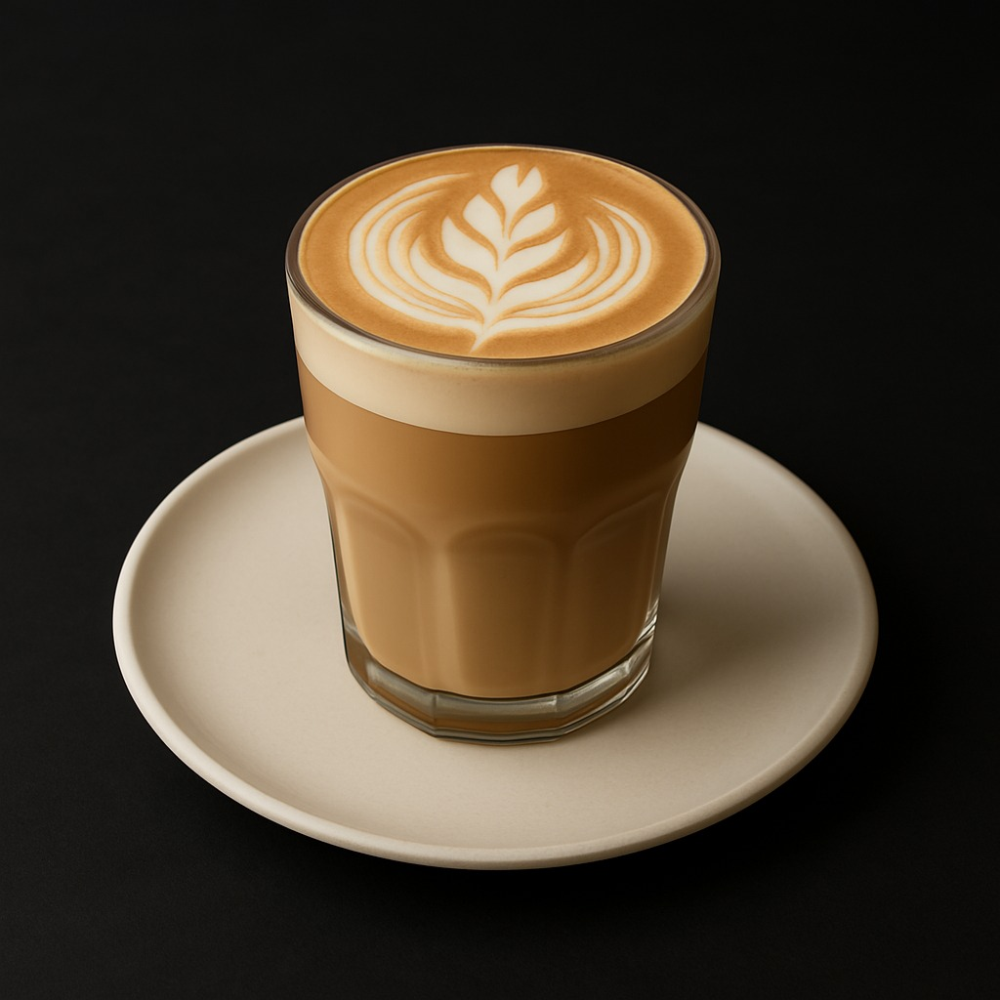
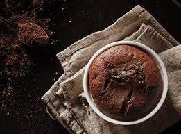

Tatlı & İçecekler
Çilekli Cheesecake
- Tereyağlı bisküvi tabanı
- Krem peynirli dolgu
- Üzerinde taze çilek ve sos
- Soğuk servis edilir
Fırın Sütlaç
- Fırınlanmış klasik sütlaç
- Tarçın ile süsleme
- Cam kase içinde sunum
- Ev yapımı lezzet
Vanilyalı Latte
- Espresso & buharda ısıtılmış süt
- Vanilya şurubu ile aroma
- Latte art süsleme
- Kupada servis
Yeşil Detoks

- Ispanak, yeşil elma, salatalık
- Soğuk sıkım yöntemiyle hazırlanır
- Limon ve nane dokunuşu
- Sağlıklı ve taze
👨🍳 Şefin Önerisi
 Maison Şefi |
 |
Bugünün özel tatlısı: Çikolatalı Sufle |